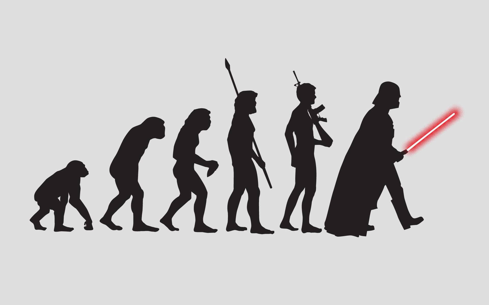
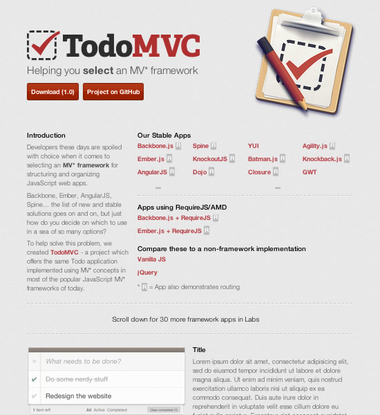
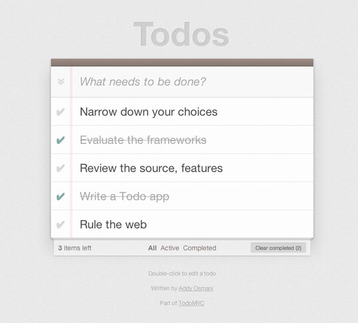
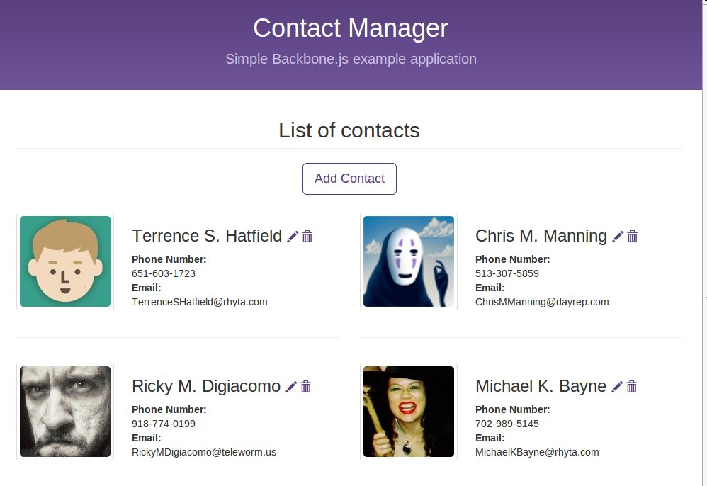

Backbone.js
Introduction
Created by Dmytro Yarmak
Evolution of frontend
1. Static HTML
- many years ago
- JS is very rare
2. jQeury
3. MV*
- MVC
- MVP
- MVVV
Reading: JavaScript MV* Patterns
What is MVC?
- Architectural design pattern
- Designed by Trygve Reenskaug - Smalltalk-80 (1979)
- Described in depth in 1995's “Design Patterns: Elements of Reusable Object-Oriented Software” (The "GoF" book),
How MVC helps as?
- It improves application organization through a separation of concerns.
- It enforces the isolation of business data (Models) from user interfaces (Views), with a third component (Controllers) traditionally managing logic and user-input.
Models
- manage the data for an application
- ‘type’ of data you can model — like a User, Photo or Note
- notify its observers that a change has occurred
Views
- visual representation of models
- present a filtered view of models' current state
- building and maintaining a DOM element
- observes model changes to update itself accordingly
Controllers
- intermediary between models and views
- responsible for updating the model when the user manipulates the view
- Backbone.js doesn't actually have true controllers
When Do You Need A JavaScript MV* Framework?
- complex user interface
- avoid spaghetti code
- much of the heavy lifting for viewing or manipulating that data will be occurring in the browser
- app communicates only with an API or back-end data service
Single-page application
- no refresh
- long life-time
- Examples: GMail and Google Docs
Where does MV* framework may be overkill?
- server makes most of the heavy-lifting of Views/pages
- using a little JavaScript or jQuery to make things a little more interactive
The Challenge Of Choice
Too Many Options
TodoMVC
A Common Application For Learning And Comparison
What is Backbone?
- In development since 2010
- Current version: 1.1.0
- Relatively mature
- "Not a framework"
- Tool that gives you the freedom to design the full experience of your web application
- Very simple
- Flexibility
Community
- ~17.000 stars on GitHub
- many courses, tutorials, screencasts
- a lot of plugins and extensions
What we are going to build?
Demo: Step 0
Dependencies
- JQuery - Recommended for DOM manipulation and Ajax
- Underscore.js - Backbone's only hard dependency
Alternative Dependencies
- Zepto - A jQuery alternative
- Lo-Dash - A performance-minded Underscore alternative with customs builds and additional features
- Backbone.Native - Only native DOM APIs
- Exoskeleton - Backbone fork with 100% optional dependencies, speed improvements and other enhancements
Demo: Step 1
Base Components
- Backbone.Model
- Backbone.Collection
- Backbone.View
- Backbone.Router
Internal Components
- Backbone.#####.extend
- Backbone.Events
- Backbone.History
- Backbone.sync
Extend
Way of creating your custom classes
var User = Backbone.Model.extend({ ... });
var Users = Backbone.Collection.extend({ ... });
var UserView = Backbone.View.extend({ ... });
var UserRouter = Backbone.Router.extend({ ... });
Inheritance with Extend
You also can extend from your classes
var User = Backbone.Model.extend({ ... });
var Admin = User.extend({ ... })
Initialize
Constructor for class
var User = Backbone.Model.extend({
initialize: function(){
console.log('One more user was created!');
}
});
var user = new User(); // => 'One more user was created!'
Backbone.Model
- Data of application
- Validation
- Computed properties
- Persistence
- Events
Demo: Step 2
Backbone.Collection
- Array of models
- A lot of methods for models manipulation
- Sorting
- Find/get models within collection
- Aggregate Model's events
Demo: Step 3
Backbone.View
- Represent Models or Collection in DOM
- Listen to events of Model/Collection to change presentation
- Listen to DOM's event's to make some business logic
- Represent one DOM element with its children
- el($el) represent Root DOM element of current view
Demo: Step 4
Templates
You can use anything you want
Underscore Templates
- interpolate variables:
<%= … %> - HTML-escaped interpolation:
<%- … %> - executing arbitrary JavaScript:
<% … %>
Loading templates
- script tag with "text/template" type
- precompiling of templates
- async loading
Script Tag
Template
Sprocket for Ruby on Rails
View
var MyView = Backbone.View.extend({
template: _.template($('#my-view-template').html()),
render: function() {
var html = this.template({
name: 'My Name',
tasks: ['task1', 'task2']
});
this.$el.html(html);
return this;
}
});
Sprocket for Ruby on Rails
Template
/app/assets/templates/my_view_template.jst.ejs
Sprocket for Ruby on Rails
View
var MyView = Backbone.View.extend({
template: JST['my_view_template'],
render: function() {
var html = this.template({
name: 'My Name',
tasks: ['task1', 'task2']
});
this.$el.html(html);
return this;
}
});
Demo: Step 5
Backbone.Router
- represent the page state
- use back and forth buttons
- parsing params